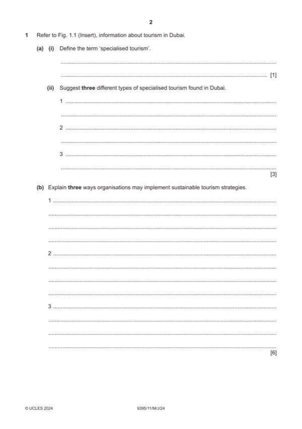

Question 1

Original paper page 2
Part 1(a)(i) — solution
Define the term ‘specialised tourism’. 1
Award one mark for a correct definition. Responses should indicate
information along the following:
This is tourism geared towards a specific interest/experience/event/activity.
Accept any other reasonable response.
Mark points
- Include the ideas shown in the solution above.
Part 1(a)(ii) — solution
- Sports tourism/golf/rugby/horse racing/powerboat racing
- Cultural tourism
- Architectural tourism
- Shopping tourism
- Environmental/responsible/sustainable tourism
Mark points
- Sports tourism/golf/rugby/horse racing/powerboat racing
- Cultural tourism
- Architectural tourism
- Shopping tourism
- Environmental/responsible/sustainable tourism
Part 1(b) — solution
- Use of renewable energy sources (1) will minimise the impact upon the
- Use of local building materials (1) will make the buildings of the
- Local labour supply used (1) will improve the reputation of the
- Recycling of materials used within the organisation (1) such as water will
- Environment protection (1) through use of barriers/signs/designated
- Educate tourists (1) on how to behave responsibly. (1)
Mark points
- Use of renewable energy sources (1) will minimise the impact upon the
- Use of local building materials (1) will make the buildings of the
- Local labour supply used (1) will improve the reputation of the
- Recycling of materials used within the organisation (1) such as water will
- Environment protection (1) through use of barriers/signs/designated
- Educate tourists (1) on how to behave responsibly. (1)
Part 1(c) — solution
- Tourist information centres
- Translators/staff who speak more than one language
- Guides and information sheets provided in a number of languages
- Signposts and signage
- TIC’s have assistants who speak a variety of languages so they can
- Signs will use pictures and symbols rather than words
- May encourage multinational companies to locate there as visitors will be
- Training may be provided for tourism providers so that they are confident
- Have tours etc. on social media that can be accessed prior to visiting
- May find a summary comment about something of overall significance
Mark points
- Tourist information centres
- Translators/staff who speak more than one language
- Guides and information sheets provided in a number of languages
- Signposts and signage
- TIC’s have assistants who speak a variety of languages so they can
- Signs will use pictures and symbols rather than words
- May encourage multinational companies to locate there as visitors will be
- Training may be provided for tourism providers so that they are confident
- Have tours etc. on social media that can be accessed prior to visiting
- May find a summary comment about something of overall significance
Part 1(d) — solution
- Training/education would be given to local people
- Local people also need to see the value of sustainable tourism
- Grants/investment opportunities may be available from local authorities
- Sustainable infrastructure developments may be put in by local
- Training will make local people familiar with the concept of sustainable
- If local people see the value of sustainable tourism they will maintain this
- Grants help this process if directed towards local businesses
- Tourists who visit the area/destination should also be sympathetic to
- Local providers should use recycling/protection etc. within their
- Awards may be given to those who adopt sustainable practices. Providing
- Link to preservation of culture and crafts
- Some overall evaluative comments would be likely
Mark points
- Training/education would be given to local people
- Local people also need to see the value of sustainable tourism
- Grants/investment opportunities may be available from local authorities
- Sustainable infrastructure developments may be put in by local
- Training will make local people familiar with the concept of sustainable
- If local people see the value of sustainable tourism they will maintain this
- Grants help this process if directed towards local businesses
- Tourists who visit the area/destination should also be sympathetic to
- Local providers should use recycling/protection etc. within their
- Awards may be given to those who adopt sustainable practices. Providing
- Link to preservation of culture and crafts
- Some overall evaluative comments would be likely